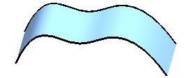
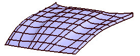
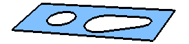
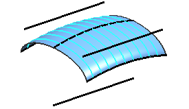
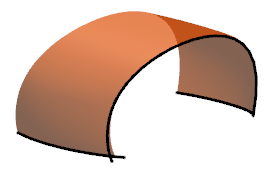

由曲线或边创建的特征
如果构造几何体只有一些连接对象(曲线，面和边)，那么您可以使用如下这些选项中的任何一个来创建特征。
-
直纹 — 如果含有两个线串，且他们近似平行而且不要去边界约束(相切或曲率连续)。这个命令不包含在这些课程中。可以使用通过曲线命令来完成相同的目的。

-
通过曲线组 — 如果两个或多个线串近似平行且需要边界约束。

-
通过曲线网格 — 如果至少存在四个线串，并且在两个方向上至少有两条曲线时。

-
有界平面 — 如果曲线必须共面，且形成封闭形状。

-
N边曲面 — 如果曲线端点相连，并形成开放或封闭的环。

-
剖切曲面 — 如果想通过现有的一组线串和/或曲面创建实体，并让实体扫掠到这些曲面或曲线的截面。

-
艺术曲面 — 如果您有任意数量的截面曲线以及任意数量的引导线。不包含在这些课程中。
